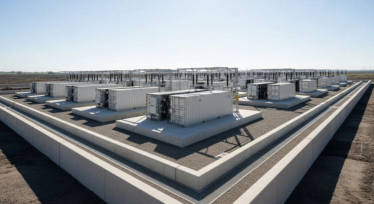
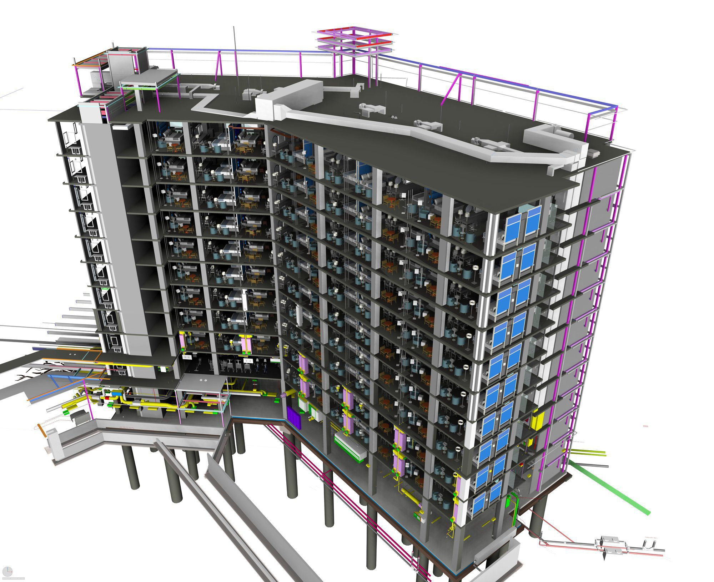
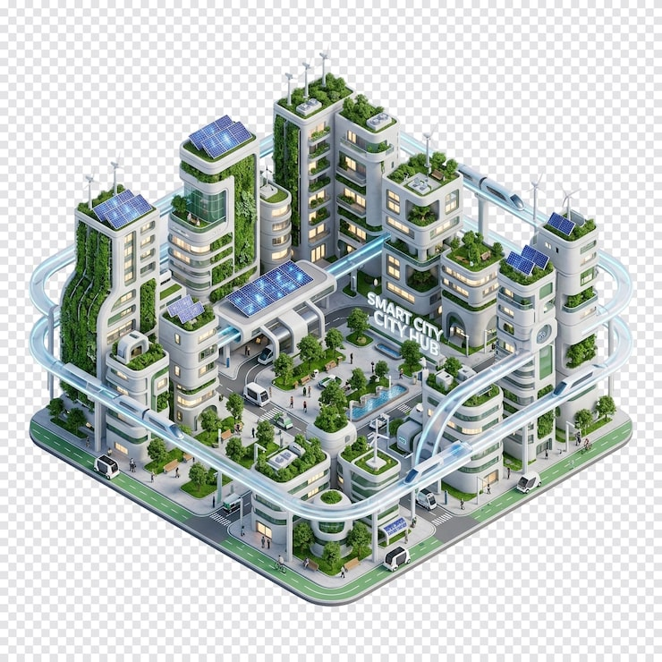

Solving Complex Engineering and Asset Information Challenges.
We integrate engineering expertise, construction delivery, quality assurance and digital intelligence to help project teams coordinate execution, strengthen technical records and prepare infrastructure for informed asset management.
Discuss Your Project →From Project Definition to Intelligent Asset Information
We coordinate technical delivery, quality assurance and project information throughout the lifecycle, building the foundation for a structured digital handover and informed asset operations.
Evaluate & Survey
Plan & Coordinate
Engineer & Deliver
Assure & Verify
Structure & Handover
Monitor & Optimise
Construction & EPC Project Delivery
For contractors, developers, project managers and EPC teams coordinating multidisciplinary work, construction activities and project deliverables.
The Challenge
Complex project environments require engineering, procurement, site execution, quality records and technical documentation to remain coordinated across disciplines, contractors and delivery stages.
Our Solution
We integrate multidisciplinary AEC expertise, engineering and project coordination, construction delivery support, QA/QC oversight and structured information management within the agreed project scope. Where appropriate, these capabilities can support EPCIC delivery arrangements.
Value Delivered
Improved coordination across project activities, traceable technical and quality records, and a more controlled transition from construction through commissioning and handover.

Digital QA/QC & Project Assurance
For project owners, contractors, quality managers and consultants requiring traceable inspection, testing and quality documentation throughout project execution.
The Challenge
Inspection and test records, material certificates, approvals and non-conformance reports can become fragmented across site teams, contractors and project systems. This makes it harder to establish the status of quality records and retrieve supporting evidence during verification and handover.
Our Solution
We structure QA/QC documentation around applicable inspection and test requirements, linking relevant work activities to inspection records, test results, material documentation, approvals and outstanding actions within the agreed project scope.
Value Delivered
Better visibility of quality-record status, more traceable supporting evidence and a clearer basis for quality review, outstanding-document closure and digital handover.
Digital As-Built, Scan-to-BIM & Asset Information
For building owners, infrastructure operators, facility managers and retrofit teams requiring reliable information about existing asset conditions.
The Challenge
Existing assets may lack verified as-built drawings, accurate spatial information or structured records of installed architectural, structural and MEP systems. These information gaps can complicate retrofit planning, maintenance and future modifications.
Our Solution
We combine surveying and geospatial expertise, as-built documentation, reality capture and structured asset information to establish a more reliable representation of existing conditions. Where commissioned, Scan-to-BIM workflows can translate suitable survey and point-cloud data into coordinated 3D building information models.
Value Delivered
A stronger information baseline for retrofit design, maintenance planning, asset identification, space coordination and future engineering decisions.

Real Estate & Property Information
For property developers, estate managers, owners and investors seeking more structured property, construction and asset records.
The Challenge
Property and estate information is often distributed across survey documents, construction records, ownership and occupancy files, maintenance records and separate administrative systems. Fragmented information can limit visibility and complicate management decisions.
Our Solution
We organise relevant survey, as-built, construction-quality and asset records into structured, retrievable information systems tailored to the client's requirements, authorised data and information-governance arrangements.
Value Delivered
Improved access to property information, stronger records continuity and a more dependable evidence base for estate administration, maintenance planning, property transactions and future development.
Energy & Critical Infrastructure
For energy developers, infrastructure owners, industrial operators and contractors delivering or managing technically complex facilities.
The Challenge
Energy and critical infrastructure projects generate extensive technical, inspection, testing and construction records. If these records are incomplete or poorly coordinated, verification, handover and subsequent asset management become more difficult.
Our Solution
We apply relevant surveying, engineering coordination, construction-quality assurance and digital information management capabilities to infrastructure projects across power, energy, oil and gas, industrial facilities and the energy transition, including battery energy storage systems where applicable.
Value Delivered
More structured technical evidence, clearer traceability across project records and a stronger information foundation for commissioning, digital handover and subsequent asset operations.
Smart Buildings, Carbon & ESG Intelligence
For building owners, facility operators, developers and sustainability teams seeking better visibility into building performance, energy demand and environmental data.
The Challenge
Building performance information is often spread across separate controls, meters, monitoring systems and reporting tools. Limited data integration can make it harder to identify operational patterns, manage energy demand and substantiate sustainability reporting.
Our Solution
Through Smart Building Telemetry & Integration and the developing EdgeCarbon Compliance & ESG Data Platforms, Jiro-BEACONS is advancing an approach to connect relevant building telemetry, monitoring hardware and analytical workflows. Proposed capabilities include Real-Time Hardware Nodes, Carbon Tax Shield, Peak Demand Alerters and Anti-Greenwashing Ledger.
Value Delivered
The intended outcome is improved visibility into building performance, more informed energy-demand decisions and better-organised environmental data to support reporting and operational management, subject to system deployment, data quality and applicable requirements.

Engineering Solutions Applied to Real Projects
A sample of how our integrated solutions, QA/QC oversight and digital handover methodologies translate into practical project execution.
Imo City Computer Village Hub
Execution of physical construction oversight, quality control data administration, and structured project documentation to ensure absolute traceability and handover readiness.
132/33kV Substation Expansion Project
Providing independent quality assurance, inspection testing support, and progressive digital engineering documentation for critical electrical infrastructure assets.
Structured Deliverables. Lasting Project Value.
Depending on the agreed scope, project requirements and delivery stage, our engagements can produce coordinated engineering records, verified quality evidence, as-built information and structured digital handover deliverables.
Coordinated Engineering Records
Technical documents, registers and project records organised to support multidisciplinary coordination, controlled retrieval and information traceability.
Inspection & Test Packs
Structured inspection and test documentation, including applicable material records, test results, approvals and supporting quality evidence.
As-Built Information & BIM
Survey outputs, as-built drawings, point clouds and BIM models, where specified by the project scope and information requirements.
Structured Asset Registers
Organised asset identifiers, descriptions, locations and relevant technical attributes to support information retrieval and, where required, integration with asset or facilities management systems.
Digital Engineering Package (DEP)
A structured digital handover consolidating relevant engineering records, QA/QC evidence, as-built information and asset data developed throughout project delivery.
Building Performance & Telemetry Data
Where the relevant systems are deployed, building telemetry and energy-demand data to support operational visibility, performance analysis and applicable sustainability reporting.
Deliverables vary according to the agreed scope, project requirements, available source information and systems deployed.
Let's Define the Right Solution for Your Project.
Share your project objectives, delivery requirements or asset information challenges. Our team can discuss the appropriate scope, technical approach and potential deliverables.
Discuss Your Project →